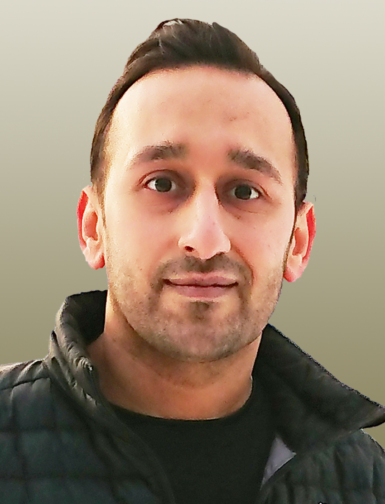

Welcome

I am a senior researcher, certified cybersecurity consultant and assistant professor with a passion for designing secure and reliable protocols that underpin today’s distributed systems. I have a Ph.D. in Cybersecurity from ELTE in collaboration with HFU, Diploma in IT Admin. from TU Berlin, and M.Sc. in Computer Science from UoB. I work at the intersection of security, distributed systems, and cryptography where protocols are complex, adversaries are imaginative, and bugs have a remarkable sense of timing. My work spans federated learning, network security, and applied cryptography, fields that sit at the core of safeguarding privacy, integrity, and trust in decentralized environments.
I’ve led and contributed to a number of research efforts, many focused on turning theory into practical, deployable solutions. Along the way, I’ve worked with universities, research labs, and companies to address security problems that are far from hypothetical. These partnerships bridge rigorous research with real-world impact.
Mentorship has been a cornerstone of my academic journey. I’ve supervised many graduate students and early-career researchers, many of whom now follow strong paths in academia and industry. I’ve also taught courses and seminars in cryptographic protocols, secure systems design, and advanced networking, balancing theory with practical insight (and occasional cautionary tales).
My current research focuses on secure protocols for large-scale distributed infrastructures, collaborative machine learning, and cryptographic tools for privacy-preserving data exchange. For a list of publications and research outputs:
I’m always interested in new ideas, collaborations, and discussions, whether you’re a fellow researcher, a prospective student, or someone working at the intersection of cryptography and system security.